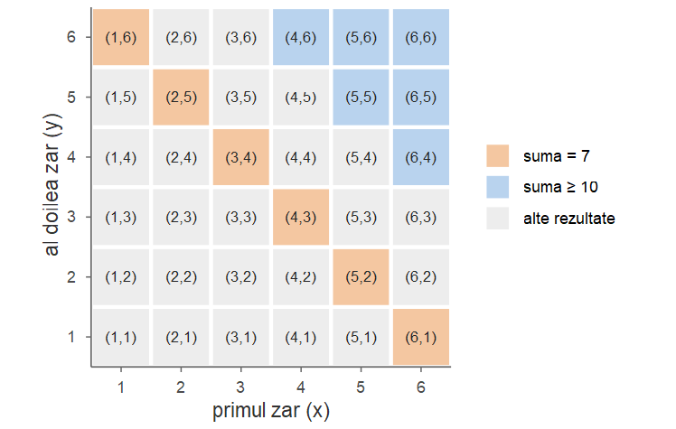
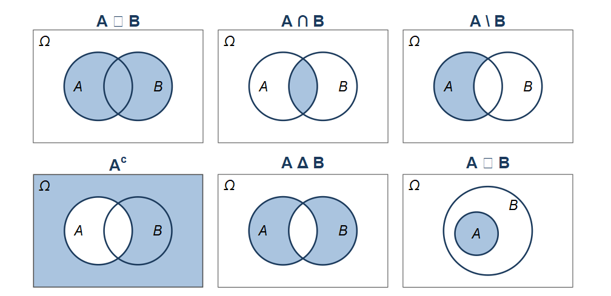
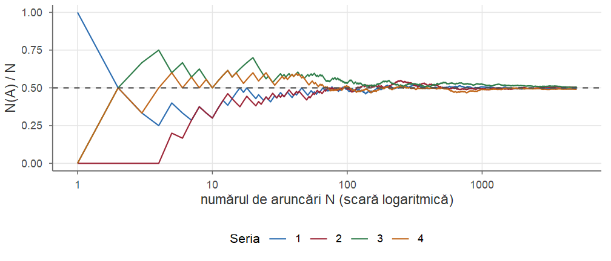
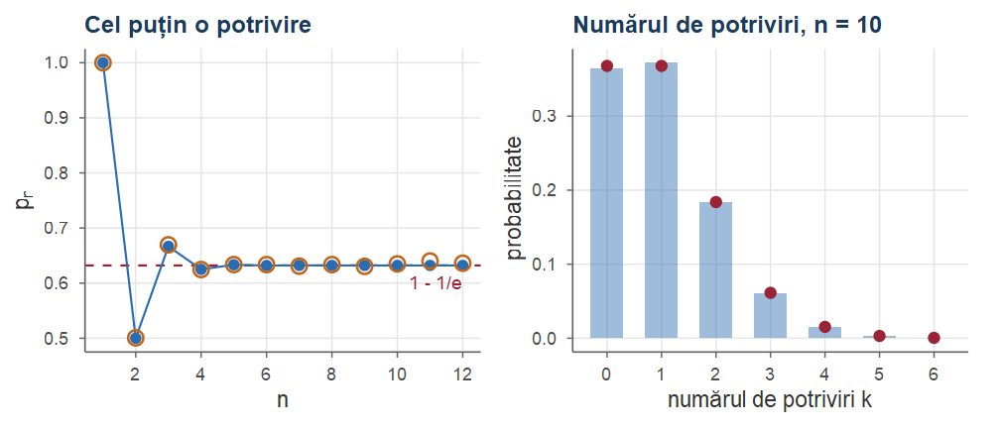

#> prob_5_rosii p_estimat
#> 0.1979 0.1000Cursul 1. Câmp de probabilitate
Probabilități și Statistică · Cursul 1
Alexandru Amărioarei
Universitatea din București · Facultatea de Matematică și Informatică · 2026–2027
Planul cursului
| Partea | Conținut |
|---|---|
| I | Probabilități și statistică; experiment aleator, spațiul stărilor, evenimente, operații cu evenimente, \(\sigma\)-algebre |
| II | Interpretarea frecvenționistă, axiomele lui Kolmogorov, proprietăți ale probabilității, modelul clasic (Laplace) |
| III | Elemente de combinatorică: regula sumei și a produsului, aranjamente, combinări, partiții, combinări cu repetiție |
| IV | Problema potrivirilor; exerciții rezolvate; recapitulare |
Obiectivele cursului
La finalul acestui curs, studenții ar trebui să poată:
- descrie un experiment aleator prin spațiul stărilor \(\Omega\) și să traducă afirmații despre rezultat în operații cu evenimente;
- explica de ce evenimentele formează o \(\sigma\)-algebră \(\F\);
- enunța axiomele lui Kolmogorov și deduce din ele regulile de calcul (evenimentul contrar, reuniunea, Poincaré, Boole, continuitatea);
- calcula probabilități în modelul clasic folosind regulile de numărare (aranjamente, combinări, partiții, combinări cu repetiție);
- recunoaște problemele clasice: zilele de naștere, Newton–Pepys, de Méré, potrivirile.
Partea I — Experiment aleator, evenimente, \(\sigma\)-algebre
Probabilități și statistică
Cele două discipline privesc aceeași realitate din direcții opuse:
- probabilitățile pornesc de la un model cunoscut și deduc ce date vom observa;
- statistica pornește de la date observate și reconstituie modelul care le-a generat.

Scurt istoric
Notă istorică
Calculul probabilităților s-a născut, în forma sa modernă, în corespondența din 1654 dintre Blaise Pascal și Pierre de Fermat, pornind de la câteva probleme legate de jocurile de noroc propuse de cavalerul de Méré (vezi Exemplul 19).
Fundamentarea axiomatică, pe care o prezentăm în acest curs, a fost dată abia în 1933 de A. N. Kolmogorov, în lucrarea Grundbegriffe der Wahrscheinlichkeitsrechnung.
Vom lucra de-a lungul întregului curs cu un exemplu-reper: urna cu bile roșii și verzi.
Urna cu bile: problema de probabilități
Exemplul 1 (Urna cu bile roșii și verzi)
O urnă conține bile roșii și verzi; proporția bilelor roșii este \(p\). Efectuăm \(n\) extrageri cu revenire și notăm culorile.
Problemă de probabilități. Știm că \(p=0.23\). Extragem cu revenire \(n=20\) de bile. Care este probabilitatea să obținem exact \(5\) bile roșii? Vom vedea că \[ \PP(\text{exact 5 bile roșii din 20}) = \binom{20}{5}\,(0.23)^5\,(0.77)^{15}\approx 0.1979 . \] \(\binom{20}{5}\) numără pozițiile bilelor roșii, \((0.23)^5\) — probabilitatea ca acele \(5\) extrageri să dea roșu, \((0.77)^{15}\) — ca celelalte \(15\) să dea verde.
Urna cu bile: problema de statistică
Exemplu (Urna cu bile (continuare))
Problemă de statistică. Nu cunoaștem \(p\). Am efectuat \(20\) de extrageri cu revenire și am observat \(5\) bile roșii. Ce putem spune despre \(p\)? Estimăm proporția necunoscută prin proporția observată: \[ \hat p=\frac{5}{20}=0.25 . \] Cât de precisă este estimarea? Putem afirma că \(p<0.3\)? — răspunsuri în partea a doua a cursului.
Urna cu bile: simulare în R
Simulăm \(20\) de extrageri cu revenire dintr-o urnă cu \(p=0.23\) și comparăm probabilitatea calculată cu proporția observată:
Populație și eșantion
În limbajul statisticii, conținutul urnei este populația, iar bilele extrase formează un eșantion.

Teoria probabilităților descrie ce eșantioane putem obține dintr-o populație cunoscută; statistica inferențială face drumul invers.
Experiment aleator și spațiul stărilor
Definiția 1 (Experiment aleator)
Se numește experiment aleator un experiment (sau fenomen) al cărui rezultat nu poate fi prezis cu exactitate (cu siguranță) înaintea realizării lui.
Definiția 2 (Spațiul stărilor)
Mulțimea tuturor rezultatelor posibile asociate unui experiment aleator se numește spațiul stărilor (sau spațiul probelor, spațiul eșantion) și se notează cu \(\Omega\). Elementele \(\omega\in\Omega\) se numesc evenimente elementare.
Cum alegem spațiul stărilor?
Alegerea lui \(\Omega\) face parte din modelare și nu este unică. Evenimentele elementare trebuie să fie:
- mutual exclusive — două rezultate distincte nu se pot produce simultan;
- colectiv exhaustive — în urma experimentului se realizează măcar unul dintre ele.
Altfel spus, se realizează unul și numai unul dintre evenimentele elementare. În plus, \(\Omega\) trebuie să aibă o granularitate potrivită: suficient de fină pentru evenimentele care ne interesează, dar fără detalii inutile.
Exemplul 2 (Aruncarea unui ban)
\(\Omega=\{H,T\}\) (\(H\) = cap, \(T\) = pajură). Spațiul \(\Omega'=\{(H,\text{plouă}),(H,\text{nu plouă}),(T,\text{plouă}),(T,\text{nu plouă})\}\) are tot elemente mutual exclusive și exhaustive, dar vremea este irelevantă: granularitate nepotrivită.
Aruncarea a două zaruri
Exemplul 3 (Aruncarea zarurilor)
La aruncarea unui zar, \(\Omega=\{1,2,3,4,5,6\}\) (spațiu discret și finit). La aruncarea a două zaruri distincte (unul alb, unul negru), \[ \Omega=\{(x,y)\mid 1\le x\le 6,\ 1\le y\le 6,\ x,y\in\N\},\qquad |\Omega|=36, \] unde \(x\) = punctele primului zar, \(y\) = punctele celui de-al doilea.
Reprezentare: tabel \(6\times 6\) (slide-ul următor) sau arbore cu \(6\) ramuri pentru primul zar și încă \(6\) din fiecare pentru al doilea; fiecare dintre cele \(36\) de drumuri este un eveniment elementar. Atenție: \((4,5)\neq(5,4)\).
Spațiul stărilor pentru două zaruri

Fiecare pătrat este un eveniment elementar; evidențiate: „suma este 7” și „suma este cel puțin 10” (câte \(6\) rezultate).
Spații ale stărilor infinite
Observație
O mulțime se numește discretă dacă este cel mult numărabilă (finită sau numărabilă). Există experimente naturale cu \(\Omega\) numărabil sau chiar nenumărabil (continuu).
Exemplul 4 (Spații ale stărilor infinite)
- Aruncăm o monedă până obținem prima dată cap: \(\Omega=\{1,2,3,\dots\}=\N^*\), cu \(1\leftrightarrow H\), \(2\leftrightarrow TH\), \(3\leftrightarrow TTH\) etc. (discret, numărabil).
- Durata de viață a unui calculator: \(\Omega=[0,T]\) (sau, mai simplu, \(\Omega=\R_+\)).
- Tragerea la țintă: pentru o țintă disc, \(\Omega=\{(x,y)\mid x^2+y^2\le R^2\}\); pentru o țintă pătrată, \(\Omega=\{(x,y)\mid 0\le x,y\le R\}\).
În ultimele două cazuri \(\Omega\) este nenumărabil (cursurile despre v.a. continue).
Evenimente
Intuitiv, un eveniment este o afirmație despre rezultatul experimentului, despre care, după efectuarea experimentului, putem spune dacă este adevărată sau falsă. Îi asociem mulțimea rezultatelor pentru care ea este adevărată.
Definiția 3 (Eveniment)
Se numește eveniment o submulțime \(A\subseteq\Omega\). Spunem că evenimentul \(A\) s-a realizat dacă rezultatul \(\omega\) al experimentului aparține lui \(A\), adică \(\omega\in A\).
Exemplul 5 (Evenimente la aruncarea zarului)
Fie \(\Omega=\{1,\dots,6\}\): a) „rezultatul este \(3\)”: \(\{3\}\); b) „impar”: \(\{1,3,5\}\); c) „prim”: \(\{2,3,5\}\); d) „cel mult \(4\)”: \(\{1,2,3,4\}\). Pentru \(\omega=3\) s-au realizat toate patru; pentru \(\omega=4\), doar ultimul.
Dicționar: mulțimi și evenimente (I)
| Notație | Teoria mulțimilor | Teoria probabilităților |
|---|---|---|
| \(\Omega\) | mulțimea \(\Omega\) | spațiul stărilor; evenimentul sigur |
| \(\omega\) | element al lui \(\Omega\) | eveniment elementar |
| \(\emptyset\) | mulțimea vidă | evenimentul imposibil |
| \(A\) | submulțimea \(A\subseteq\Omega\) | evenimentul \(A\) se realizează |
| \(A^c\) (\(\complement_A\), \(\bar A\)) | complementara lui \(A\) | evenimentul contrar lui \(A\) |
| \(A\cup B\) | reuniunea | se realizează \(A\) sau \(B\) (cel puțin unul) |
Dicționar: mulțimi și evenimente (II)
| Notație | Teoria mulțimilor | Teoria probabilităților |
|---|---|---|
| \(A\cap B\) | intersecția | se realizează \(A\) și \(B\) (simultan) |
| \(A\setminus B\) | diferența | se realizează \(A\), dar nu și \(B\) |
| \(A\,\triangle\, B\) | diferența simetrică | se realizează \(A\) sau \(B\), dar nu amândouă |
| \(A\subseteq B\) | incluziunea | \(A\) implică \(B\) (\(\omega\in A\Rightarrow\omega\in B\)) |
| \(A\cap B=\emptyset\) | mulțimi disjuncte | \(A\) și \(B\) sunt incompatibile |
Diagrame Venn

Relații între operații
Diferența și diferența simetrică se exprimă prin celelalte operații: \[ A\setminus B=A\cap B^c,\qquad A\,\triangle\,B=(A\setminus B)\cup(B\setminus A)=(A\cup B)\setminus(A\cap B). \]
Reuniunea și intersecția sunt comutative, asociative și distributive una față de cealaltă: \[ A\cap(B\cup C)=(A\cap B)\cup(A\cap C),\qquad A\cup(B\cap C)=(A\cup B)\cap(A\cup C). \]
Legătura dintre reuniune, intersecție și complementară este dată de relațiile lui De Morgan.
Relațiile lui De Morgan
Propoziția 4 (Relațiile lui De Morgan)
Pentru orice familie de evenimente \((A_i)_{i\in I}\) (finită sau infinită) avem \[ \Big(\bigcup_{i\in I}A_i\Big)^c=\bigcap_{i\in I}A_i^c,\qquad \Big(\bigcap_{i\in I}A_i\Big)^c=\bigcup_{i\in I}A_i^c . \]
Demonstrație. \(\omega\in\big(\bigcup_i A_i\big)^c\) \(\iff\) \(\omega\) nu aparține niciunui \(A_i\) \(\iff\) \(\omega\in A_i^c\) pentru orice \(i\) \(\iff\) \(\omega\in\bigcap_i A_i^c\). A doua relație se obține din prima aplicată evenimentelor \(A_i^c\) și trecând la complementară.■
În limbaj probabilist: „nu se realizează niciunul” = „nu se realizează \(A_1\) și nu se realizează \(A_2\) și …”; „nu se realizează toate” = „cel puțin unul nu se realizează”.
Evenimente incompatibile. Sistem complet
Definiția 5 (Evenimente incompatibile. Sistem complet de evenimente)
Două evenimente \(A,B\) se numesc incompatibile (disjuncte, mutual exclusive) dacă \(A\cap B=\emptyset\), adică nu se pot realiza simultan. Evenimentele \((A_i)_{i\in I}\) sunt incompatibile două câte două dacă \(A_i\cap A_j=\emptyset\) pentru orice \(i\neq j\). O familie de evenimente incompatibile două câte două a căror reuniune este \(\Omega\) se numește sistem complet de evenimente (sau partiție a lui \(\Omega\)).
Exemple: \(\{A, A^c\}\) este întotdeauna un sistem complet; pentru \(\Omega\) discret, evenimentele elementare \(\{\omega\}\), \(\omega\in\Omega\), formează un sistem complet. Sistemele complete joacă un rol central în formula probabilității totale (Cursul 2).
Aruncarea de 10 ori a unei monede
Exemplul 6 (Aruncarea de 10 ori a unei monede)
\(\Omega=\{(x_1,\dots,x_{10})\mid x_i\in\{H,T\}\}=\{H,T\}^{10}\), \(|\Omega|=2^{10}=1024\). Fie \(A_j=\{(x_1,\dots,x_{10})\in\Omega\mid x_j=H\}\) = „cap la aruncarea \(j\)”, \(j=1,\dots,10\). Atunci:
- \(E_1=A_1\cup A_2\cup\dots\cup A_{10}\) = „cel puțin un cap”;
- \(E_2=A_1\cap A_2\cap\dots\cap A_{10}\) = „cap la toate cele 10 aruncări”;
- \(E_3=\bigcup_{i=1}^{9}(A_i\cap A_{i+1})\) = „cap de două ori consecutiv (cel puțin o dată)”;
- \(E_1^c=\bigcap_{j=1}^{10}A_j^c\) = „niciun cap” (De Morgan).
Mulțimea evenimentelor \(\F\)
Notăm cu \(\F\) mulțimea evenimentelor asociate unui experiment: \(\F\subseteq\mathcal P(\Omega)\) (mulțimea părților lui \(\Omega\)).
- Dacă \(\Omega\) este finit, putem lua \(\F=\mathcal P(\Omega)\).
- În general (din motive tehnice profunde), \(\F\) poate fi mai mică decât \(\mathcal P(\Omega)\).
Ce proprietăți minimale trebuie să aibă \(\F\)? Natural: \(\Omega\) să fie un eveniment, iar operațiile logice „nu”, „sau” (deci și „și”) aplicate unor evenimente să producă tot evenimente.
Algebră de evenimente
Definiția 6 (Algebră de evenimente)
O colecție \(\F\subseteq\mathcal P(\Omega)\) care verifică proprietățile
- \(\Omega\in\F\);
- dacă \(A\in\F\), atunci \(A^c\in\F\) (închidere la complementară);
- dacă \(A,B\in\F\), atunci \(A\cup B\in\F\) (închidere la reuniuni finite)
se numește algebră (de evenimente) peste \(\Omega\).
Din a) și b): \(\emptyset=\Omega^c\in\F\). Prin inducție, c) implică închiderea la reuniuni finite oarecare. Dar c) nu este suficientă pentru toate evenimentele care ne interesează…
Primul cap după un număr par de aruncări
Exemplul 7 (Primul cap după un număr par de aruncări)
Aruncăm o monedă până obținem prima dată cap; \(\Omega=\N^*\). Evenimentul \[ \begin{aligned} A&=\{\text{am obținut pentru prima dată cap după un număr par de aruncări}\}\\ &=\{2,4,6,\dots\}=\bigcup_{i\ge 1}\{2i\} \end{aligned} \] este o reuniune numărabilă de evenimente elementare. Dacă dorim ca toate \(\{2i\}\) și \(A\) să fie evenimente, avem nevoie ca \(\F\) să fie închisă la reuniuni numărabile.
Vom calcula \(\PP(A)\) în Exercițiul 3.
\(\sigma\)-algebră
Definiția 7 (\(\sigma\)-algebră)
O colecție \(\F\subseteq\mathcal P(\Omega)\) care verifică proprietățile
- \(\Omega\in\F\);
- dacă \(A\in\F\), atunci \(A^c\in\F\);
- dacă \((A_n)_{n\ge1}\subseteq\F\), atunci \(\bigcup_{n=1}^{\infty}A_n\in\F\)
se numește \(\sigma\)-algebră (sau \(\sigma\)-corp) peste \(\Omega\). Elementele lui \(\F\) se numesc evenimente.
Orice \(\sigma\)-algebră este o algebră: pentru \(A,B\in\F\) alegem \(A_1=A\), \(A_2=B\), \(A_n=\emptyset\) (\(n\ge3\)) în c). Reciproca este falsă pentru \(\Omega\) infinit (Exercițiul propus 3); pentru \(\Omega\) finit noțiunile coincid.
Proprietăți ale unei \(\sigma\)-algebre
Propoziția 8 (Proprietăți ale unei \(\sigma\)-algebre)
Fie \(\F\) o \(\sigma\)-algebră peste \(\Omega\). Atunci:
- \(\emptyset\in\F\);
- dacă \(A_1,\dots,A_n\in\F\), atunci \(\bigcup_{i=1}^nA_i\in\F\) și \(\bigcap_{i=1}^nA_i\in\F\);
- dacă \((A_n)_{n\ge1}\subseteq\F\), atunci \(\bigcap_{n=1}^{\infty}A_n\in\F\);
- dacă \(A,B\in\F\), atunci \(A\setminus B\in\F\) și \(A\,\triangle\,B\in\F\).
Demonstrație.
- \(\emptyset=\Omega^c\in\F\). b) Reuniunea finită: completăm șirul cu \(A_{n+1}=A_{n+2}=\dots=\emptyset\). c) \(A_n^c\in\F\), deci \(\bigcup_nA_n^c\in\F\) și, din De Morgan, \(\bigcap_nA_n=\big(\bigcup_nA_n^c\big)^c\in\F\) (intersecția finită din b): la fel). d) \(A\setminus B=A\cap B^c\in\F\), \(A\,\triangle\,B=(A\setminus B)\cup(B\setminus A)\in\F\).
■
Exemple de \(\sigma\)-algebre
Exemplul 8 (Exemple de \(\sigma\)-algebre)
Fie \(\Omega\) o mulțime nevidă.
- \(\F_0=\{\emptyset,\Omega\}\) este o \(\sigma\)-algebră (cea mai mică, \(\sigma\)-algebra trivială).
- \(\mathcal P(\Omega)\) este o \(\sigma\)-algebră (cea mai mare posibilă).
- Dacă \(A\subseteq\Omega\), atunci \(\{\emptyset,A,A^c,\Omega\}\) este o \(\sigma\)-algebră: cea mai mică \(\sigma\)-algebră care îl conține pe \(A\).
- Dacă \(\Omega=\{\omega_1,\dots,\omega_n\}\), atunci \(|\mathcal P(\Omega)|=2^n\): fiecărui \(A\subseteq\Omega\) îi asociem \((x_1,\dots,x_n)\in\{0,1\}^n\), cu \(x_i=1\) dacă \(\omega_i\in A\) (ex. \(\{\omega_1,\omega_3\}\mapsto(1,0,1,0,\dots,0)\)); corespondența este bijectivă. La aruncarea unui zar, \(\mathcal P(\Omega)\) are \(2^6=64\) de evenimente.
\(\sigma\)-algebra generată
Definiția 9 (\(\sigma\)-algebra generată)
Fie \(\mathcal C\subseteq\mathcal P(\Omega)\). Intersecția tuturor \(\sigma\)-algebrelor peste \(\Omega\) care conțin \(\mathcal C\) este o \(\sigma\)-algebră, notată \(\sigma(\mathcal C)\) și numită \(\sigma\)-algebra generată de \(\mathcal C\): cea mai mică \(\sigma\)-algebră care conține toate mulțimile din \(\mathcal C\).
- Fiecare axiomă, adevărată pentru toate \(\sigma\)-algebrele din intersecție, rămâne adevărată pentru intersecție (familia este nevidă: conține \(\mathcal P(\Omega)\)).
- \(\sigma(\{A\})=\{\emptyset,A,A^c,\Omega\}\); dacă \(\{B_1,\dots,B_k\}\) este o partiție, \(\sigma(\{B_1,\dots,B_k\})\) = toate reuniunile de blocuri, cu \(2^k\) elemente (Exercițiul 2).
- \(\sigma\)-algebra boreliană pe \(\R\): \(\B(\R)=\sigma(\{(a,b]\mid a<b\})\), generată de intervale.
De ce nu mereu \(\mathcal P(\Omega)\)? Spațiu măsurabil
Observație
Pentru \(\Omega\) cel mult numărabil, \(\F=\mathcal P(\Omega)\) este posibil și natural. Pentru \(\Omega=[0,1]\) se poate arăta însă că nu există nicio funcție definită pe toate submulțimile lui \([0,1]\) care să extindă noțiunea de lungime și să verifice axiomele probabilității; de aceea ne restrângem la \(\sigma\)-algebra boreliană, suficient de bogată pentru aplicații.
Definiția 10 (Spațiu măsurabil)
Perechea \((\Omega,\F)\), unde \(\Omega\) este spațiul stărilor unui experiment aleator și \(\F\) este o \(\sigma\)-algebră peste \(\Omega\), se numește spațiu probabilizabil (sau spațiu măsurabil).
Partea II — Măsura de probabilitate
Interpretarea frecvenționistă
Repetăm experimentul de \(N\) ori, în condiții identice, și notăm cu \(N(A)\) numărul de realizări ale evenimentului \(A\). Raportul \(N(A)/N\) este frecvența relativă a lui \(A\).
Experiența arată că, pe măsură ce \(N\) crește, frecvența relativă se stabilizează în jurul unei valori, pe care o interpretăm drept probabilitatea lui \(A\): \[ \PP(A)=\lim_{N\to\infty}\frac{N(A)}{N}. \]
Relația nu poate servi drept definiție matematică (limita nu are sens precis pentru un șir „aleator” de rezultate — vom reveni la Legea Numerelor Mari), dar sugerează proprietățile probabilității.
Stabilizarea frecvenței relative

Patru serii independente de câte \(5000\) de aruncări ale unei monede echilibrate: frecvența relativă a capetelor după primele \(N\) aruncări.
Ce ne sugerează frecvența relativă
- \(0\le N(A)\le N\), deci \(\PP(A)\in[0,1]\);
- \(N(\emptyset)=0\) și \(N(\Omega)=N\), deci \(\PP(\emptyset)=0\) și \(\PP(\Omega)=1\);
- dacă \(A\cap B=\emptyset\), atunci \(N(A\cup B)=N(A)+N(B)\); împărțind la \(N\) și trecând la limită, \(\PP(A\cup B)=\PP(A)+\PP(B)\) (aditivitate finită).
Extinzând ultima proprietate la cazul numărabil obținem \(\sigma\)-aditivitatea: dacă \((A_n)_{n\ge1}\subseteq\F\) sunt incompatibile două câte două, atunci \[ \PP\Big(\bigcup_{n=1}^\infty A_n\Big)=\sum_{n=1}^\infty\PP(A_n). \]
Axiomele lui Kolmogorov
Definiția 11 (Măsură de probabilitate)
Fie \((\Omega,\F)\) un spațiu probabilizabil. O funcție \(\PP:\F\to[0,1]\) care satisface
- \(\PP(\emptyset)=0\) și \(\PP(\Omega)=1\);
- (\(\sigma\)-aditivitate) dacă \((A_n)_{n\ge1}\subseteq\F\) sunt incompatibile două câte două (\(A_i\cap A_j=\emptyset\), \(i\neq j\)), atunci \[ \PP\Big(\bigcup_{n=1}^\infty A_n\Big)=\sum_{n=1}^\infty\PP(A_n) \]
se numește măsură de probabilitate (sau probabilitate) pe \((\Omega,\F)\).
Câmp de probabilitate
Definiția 12 (Câmp de probabilitate)
Tripletul \((\Omega,\F,\PP)\), unde \((\Omega,\F)\) este un spațiu probabilizabil și \(\PP\) este o măsură de probabilitate pe \((\Omega,\F)\), se numește câmp de probabilitate (sau spațiu de probabilitate).
Un experiment aleator este modelat prin trei obiecte: \(\Omega\) (evenimentele elementare), \(\F\) (evenimentele) și \(\PP\) (măsura de probabilitate).
Observație
\(\PP(\emptyset)=0\) este o consecință a celorlalte axiome: șirul \(A_n=\emptyset\), \(n\ge1\), este format din evenimente incompatibile, cu reuniunea \(\emptyset\), deci \(\PP(\emptyset)=\sum_{n\ge1}\PP(\emptyset)\). Dacă \(\PP(\emptyset)=c>0\), membrul drept ar fi \(+\infty\) — contradicție.
Exemple: banul și zarul
Exemplul 9 (Câmpul de probabilitate al aruncării unui ban)
\(\Omega=\{H,T\}\), \(\F=\mathcal P(\Omega)=\{\emptyset,\{H\},\{T\},\Omega\}\). Este suficient să fixăm \(\PP(\{H\})=p\in[0,1]\): din aditivitate, \(1=\PP(\Omega)=\PP(\{H\})+\PP(\{T\})\), deci \(\PP(\{T\})=1-p\); \(\PP(\emptyset)=0\). Ban corect: \(p=1/2\).
Exemplul 10 (Câmpul de probabilitate al aruncării unui zar)
\(\Omega=\{1,\dots,6\}\), \(\F=\mathcal P(\Omega)\). Fixăm \(\PP(\{i\})=p_i\in[0,1]\). Cum \(\Omega=\{1\}\cup\dots\cup\{6\}\) (disjunctă), trebuie \(p_1+\dots+p_6=\PP(\Omega)=1\); în general, \(\PP(A)=\sum_{i\in A}p_i\).
Zarul echilibrat și zarul trucat
Exemplu (Zarul (continuare))
- Zar echilibrat: \(p_i=1/6\), deci \(\PP(\text{rezultat prim})=\PP(\{2,3,5\})=3/6=1/2\).
- Zar trucat cu \(p_6=1/2\) și \(p_1=\dots=p_5=1/10\): \[ \PP(\{2,3,5\})=\frac{3}{10},\qquad \PP(\{4,5,6\})=\frac1{10}+\frac1{10}+\frac12=\frac7{10}. \]
Construcția funcționează pentru orice spațiu discret (slide-ul următor).
Probabilități pe un spațiu discret
Propoziția 13 (Probabilități pe un spațiu discret)
Fie \(\Omega=\{\omega_1,\omega_2,\dots\}\) finit sau numărabil și \((p_i)_{i\ge1}\) cu \(p_i\ge0\), \(\sum_ip_i=1\). Atunci \[ \PP(A)=\sum_{i:\ \omega_i\in A}p_i,\qquad A\in\mathcal P(\Omega), \] este o măsură de probabilitate pe \((\Omega,\mathcal P(\Omega))\), cu \(\PP(\{\omega_i\})=p_i\). Reciproc, orice probabilitate pe \((\Omega,\mathcal P(\Omega))\) este de această formă.
Demonstrație. \(\PP(\emptyset)=0\), \(\PP(\Omega)=\sum_ip_i=1\). Dacă \((A_n)_n\) sunt disjuncte, fiecare \(\omega_i\in\bigcup_nA_n\) aparține unui singur \(A_n\); seria are termeni nenegativi, deci o putem regrupa: \(\PP(\bigcup_nA_n)=\sum_n\sum_{i:\,\omega_i\in A_n}p_i=\sum_n\PP(A_n)\). Reciproc, \(p_i=\PP(\{\omega_i\})\) și \(A=\bigcup_{\omega_i\in A}\{\omega_i\}\) (reuniune cel mult numărabilă, disjunctă), deci \(\PP(A)=\sum_{\omega_i\in A}p_i\).■
Reguli de calcul
Propoziția 14 (Reguli de calcul)
Fie \((\Omega,\F,\PP)\) un câmp de probabilitate și \(A,B\in\F\). Atunci:
- (aditivitate finită) dacă \(A\cap B=\emptyset\), atunci \(\PP(A\cup B)=\PP(A)+\PP(B)\);
- (evenimentul contrar) \(\PP(A^c)=1-\PP(A)\);
- (monotonie) dacă \(A\subseteq B\), atunci \(\PP(B\setminus A)=\PP(B)-\PP(A)\) și \(\PP(A)\le\PP(B)\);
- (diferența) \(\PP(A\setminus B)=\PP(A)-\PP(A\cap B)\);
- (reuniunea a două evenimente) \(\PP(A\cup B)=\PP(A)+\PP(B)-\PP(A\cap B)\).
Reguli de calcul — demonstrație
Demonstrație.
\(\sigma\)-aditivitatea pentru \(A_1=A\), \(A_2=B\), \(A_n=\emptyset\) (\(n\ge3\)): \(\PP(A\cup B)=\PP(A)+\PP(B)+\sum_{n\ge3}\PP(\emptyset)=\PP(A)+\PP(B)\).
\(\Omega=A\cup A^c\), \(A\cap A^c=\emptyset\), deci \(1=\PP(\Omega)=\PP(A)+\PP(A^c)\).
Dacă \(A\subseteq B\), atunci \(B=A\cup(B\setminus A)\), reuniune disjunctă; din a), \(\PP(B)=\PP(A)+\PP(B\setminus A)\ge\PP(A)\).
\(A\setminus B=A\setminus(A\cap B)\), cu \(A\cap B\subseteq A\); aplicăm c).
\(A\cup B=(A\setminus B)\cup(A\cap B)\cup(B\setminus A)\), disjuncte două câte două; din a) și d): \[ \PP(A\cup B)=\big[\PP(A)-\PP(A\cap B)\big]+\PP(A\cap B)+\big[\PP(B)-\PP(A\cap B)\big]. \]
■
Reuniunea a trei evenimente
Interpretare vizuală pentru e): adunând \(\PP(A)\) și \(\PP(B)\), „zona comună” \(A\cap B\) este numărată de două ori, deci o scădem o dată.
Pentru trei evenimente (aplicând e) de două ori): \[ \begin{aligned} \PP(A\cup B\cup C)={}&\PP(A)+\PP(B)+\PP(C)\\ &-\PP(A\cap B)-\PP(A\cap C)-\PP(B\cap C)+\PP(A\cap B\cap C). \end{aligned} \] Zona \(A\cap B\cap C\) este adunată de trei ori, scăzută de trei ori și adunată din nou o dată. Formula se generalizează la \(n\) evenimente.
Formula lui Poincaré
Teorema 15 (Formula lui Poincaré (principiul includerii și excluderii))
Pentru orice evenimente \(A_1,A_2,\dots,A_n\in\F\), \[ \begin{aligned} \PP\Big(\bigcup_{i=1}^nA_i\Big)&=\sum_{i=1}^n\PP(A_i)-\sum_{i<j}\PP(A_i\cap A_j)+\sum_{i<j<k}\PP(A_i\cap A_j\cap A_k)-\dots\\ &\quad+(-1)^{n+1}\PP(A_1\cap A_2\cap\dots\cap A_n)\\ &=\sum_{k=1}^n(-1)^{k+1}\sum_{1\le i_1<\dots<i_k\le n}\PP(A_{i_1}\cap\dots\cap A_{i_k}). \end{aligned} \]
Formula lui Poincaré — demonstrație
Demonstrație. Inducție după \(n\). Pentru \(n=2\) este Propoziția 14 e). Presupunem formula adevărată pentru orice \(n\) evenimente; fie \(A_1,\dots,A_{n+1}\) și \(B=\bigcup_{i=1}^nA_i\). Din cazul \(n=2\), \[ \PP\Big(\bigcup_{i=1}^{n+1}A_i\Big)=\PP(B)+\PP(A_{n+1})-\PP(B\cap A_{n+1}),\qquad B\cap A_{n+1}=\bigcup_{i=1}^n(A_i\cap A_{n+1}). \] Aplicăm ipoteza de inducție pentru \(\PP(B)\) și pentru \(\PP\big(\bigcup_{i=1}^n(A_i\cap A_{n+1})\big)\):
- primul termen dă toate intersecțiile de \(k\) evenimente dintre \(A_1,\dots,A_n\), cu semnul \((-1)^{k+1}\);
- al doilea (cu minus) dă intersecțiile \(A_{i_1}\cap\dots\cap A_{i_k}\cap A_{n+1}\) (\(k+1\) evenimente), cu semnul \(-(-1)^{k+1}=(-1)^{(k+1)+1}\).
Împreună cu \(\PP(A_{n+1})\) obținem formula pentru \(n+1\) evenimente.■
Inegalitățile lui Bonferroni
Propoziția 16 (Inegalitățile lui Bonferroni)
Pentru orice \(A,B\in\F\): \(\ \text{(i)}\ \PP(A\cup B)\le\PP(A)+\PP(B)\), \(\quad\text{(ii)}\ \PP(A\cap B)\ge\PP(A)+\PP(B)-1\). Mai general, pentru \(A_1,\dots,A_n\in\F\), \[ \PP\Big(\bigcup_{i=1}^nA_i\Big)\le\sum_{i=1}^n\PP(A_i),\qquad \PP\Big(\bigcap_{i=1}^nA_i\Big)\ge\sum_{i=1}^n\PP(A_i)-(n-1). \]
Demonstrație.
- din e), deoarece \(\PP(A\cap B)\ge0\); (ii) din e), deoarece \(\PP(A\cup B)\le1\). Prima inegalitate generală: inducție din (i). A doua: aplicăm prima lui \(A_i^c\) și De Morgan: \(\PP\big(\bigcap_iA_i\big)=1-\PP\big(\bigcup_iA_i^c\big)\ge1-\sum_i\big(1-\PP(A_i)\big)\).
■
Bonferroni: exemplu. Inegalitatea lui Boole
- este utilă când \(\PP(A)\), \(\PP(B)\) sunt mici, (ii) când sunt mari. Dacă \(90\%\) dintre studenți au laptop și \(95\%\) au telefon mobil, atunci cel puțin \(0.90+0.95-1=85\%\) au ambele dispozitive.
Propoziția 17 (Inegalitatea lui Boole)
Pentru orice șir de evenimente \((A_n)_{n\ge1}\subseteq\F\), \(\ \PP\big(\bigcup_{n=1}^\infty A_n\big)\le\sum_{n=1}^\infty\PP(A_n).\)
Demonstrație. „Disjunctăm” șirul: \(B_1=A_1\), \(B_n=A_n\setminus(A_1\cup\dots\cup A_{n-1})\), \(n\ge2\). Evenimentele \(B_n\) sunt incompatibile, \(B_n\subseteq A_n\) și \(\bigcup_nB_n=\bigcup_nA_n\) (\(\omega\) din reuniune aparține lui \(B_n\) pentru cel mai mic \(n\) cu \(\omega\in A_n\)). Din \(\sigma\)-aditivitate și monotonie, \(\PP\big(\bigcup_nA_n\big)=\sum_n\PP(B_n)\le\sum_n\PP(A_n)\).■
Continuitatea probabilității
Teorema 18 (Continuitatea probabilității)
Fie \((A_n)_{n\ge1}\subseteq\F\).
Dacă șirul este crescător (\(A_1\subseteq A_2\subseteq\dots\)), atunci \(\PP\big(\bigcup_{n=1}^\infty A_n\big)=\lim_{n\to\infty}\PP(A_n)\).
Dacă șirul este descrescător (\(A_1\supseteq A_2\supseteq\dots\)), atunci \(\PP\big(\bigcap_{n=1}^\infty A_n\big)=\lim_{n\to\infty}\PP(A_n)\).
Demonstrație.
- \(B_1=A_1\), \(B_n=A_n\setminus A_{n-1}\): incompatibile, \(A_n=B_1\cup\dots\cup B_n\), \(\bigcup_nA_n=\bigcup_nB_n\), deci \[ \PP\Big(\bigcup_{n}A_n\Big)=\sum_{k=1}^\infty\PP(B_k)=\lim_{n\to\infty}\sum_{k=1}^n\PP(B_k)=\lim_{n\to\infty}\PP(A_n). \]
- \((A_n^c)_n\) este crescător și \(\big(\bigcap_nA_n\big)^c=\bigcup_nA_n^c\); din a), \(1-\PP\big(\bigcap_nA_n\big)=1-\lim_n\PP(A_n)\).
■
Mai devreme sau mai târziu apare capul
Exemplul 11 (Mai devreme sau mai târziu apare capul)
Aruncăm o monedă de o infinitate de ori; \(\PP(\text{cap})=p\in(0,1)\) la fiecare aruncare. \(\Omega=\{H,T\}^{\N^*}=\{(\omega_k)_{k\ge1}\mid\omega_k\in\{H,T\}\}\). Fie \[ \begin{aligned} A&=\{\text{capul apare mai devreme sau mai târziu}\},\\ A_n&=\{(\omega_k)_k\in\Omega\mid\exists\,i\in\{1,\dots,n\}\text{ cu }\omega_i=H\}\ \ (\text{cap în primele } n \text{ aruncări}). \end{aligned} \] Avem \(A_1\subseteq A_2\subseteq\dots\) și \(A=\bigcup_nA_n\). Contrarul lui \(A_n\): „primele \(n\) aruncări au dat pajură”; vom vedea (Cursul 2, independență) că \(\PP(A_n^c)=(1-p)^n\).
Capul apare aproape sigur
Exemplu (Capul apare (continuare))
Din Teorema 18, \[ \PP(A)=\lim_{n\to\infty}\PP(A_n)=\lim_{n\to\infty}\big(1-(1-p)^n\big)=1 . \] Deci, oricât de mică ar fi \(p>0\), capul apare aproape sigur.
Atenție!
\(A\neq\Omega\) (șirul \(TTT\dots\) nu aparține lui \(A\)), dar \(\PP(A)=1\): un eveniment de probabilitate \(1\) nu este neapărat evenimentul sigur (analog, un eveniment de probabilitate \(0\) nu este neapărat imposibil).
Modelul clasic de probabilitate
Cel mai vechi model: experimentul are un număr finit de rezultate, toate la fel de probabile (ban, zar echilibrat, pachet bine amestecat, loterie).
Definiția 19 (Câmpul de probabilitate al lui Laplace)
Fie \(N\ge1\) și un experiment aleator cu \(N\) rezultate posibile, \(\Omega=\{\omega_1,\dots,\omega_N\}\). Considerăm \(\F=\mathcal P(\Omega)\) (cu \(2^N\) elemente) și măsura de probabilitate definită prin \[ \PP(\{\omega_i\})=\frac1N,\qquad i=1,\dots,N, \] numită echirepartiție (repartiția uniformă discretă). Tripletul \((\Omega,\F,\PP)\) se numește câmpul de probabilitate al lui Laplace (modelul clasic).
Formula lui Laplace
Pentru orice \(A\in\F\), \[ \PP(A)=\PP\Big(\bigcup_{\omega_i\in A}\{\omega_i\}\Big)=\sum_{\omega_i\in A}\PP(\{\omega_i\})=\sum_{\omega_i\in A}\frac1N=\frac{|A|}{N}, \] adică \[ \PP(A)=\frac{|A|}{|\Omega|}=\frac{\text{numărul cazurilor favorabile}}{\text{numărul cazurilor posibile}}. \]
În modelul clasic, calculul probabilităților se reduce la numărarea elementelor unor mulțimi finite — motivația pentru Partea a III-a (combinatorică).
Suma a două zaruri
Exemplul 12 (Suma a două zaruri)
\(\Omega=\{1,\dots,6\}^2\) cu echirepartiția, \(|\Omega|=36\). „Suma este \(7\)” \(=\{(1,6),(2,5),(3,4),(4,3),(5,2),(6,1)\}\), probabilitate \(6/36=1/6\). „Suma cel puțin \(10\)”: \(3+2+1=6\) elemente, tot \(1/6\); „dublă”: \(6/36=1/6\).
Atenție la alegerea lui \(\Omega\)
Atenție!
Formula lui Laplace se aplică doar când rezultatele din \(\Omega\) sunt egal probabile, iar alegerea lui \(\Omega\) contează.
- Dacă, la aruncarea a două zaruri, am lua \(\Omega=\{2,3,\dots,12\}\) (sumele) cu echirepartiția, am obține greșit \(\PP(\text{suma}=7)=1/11\).
- d’Alembert susținea că la aruncarea a două monede \(\PP(\text{un cap și o pajură})=1/3\) (considerând „două capete”, „două pajuri”, „un cap și o pajură” egal probabile). Corect: \(HH,HT,TH,TT\) sunt egal probabile, deci probabilitatea este \(2/4=1/2\).
Regula practică: considerați obiectele (zaruri, monede, persoane) distincte, chiar dacă par identice.
Partea III — Elemente de combinatorică
Regula sumei
Notăm cu \(|A|\) cardinalul (numărul de elemente al) unei mulțimi finite \(A\).
Propoziția 20 (Regula sumei)
Dacă \(A\) și \(B\) sunt două mulțimi finite și disjuncte (\(A\cap B=\emptyset\)), atunci \[ |A\cup B|=|A|+|B|. \] Reformulare: dacă un obiect \(a\) poate fi ales în \(n\) moduri și un obiect \(b\) în \(m\) moduri (fără moduri comune), atunci există \(n+m\) moduri de a alege \(a\) sau \(b\).
Dacă \(A\), \(B\) nu sunt disjuncte: \(|A\cup B|=|A|+|B|-|A\cap B|\). Justificare: în câmpul lui Laplace pe un \(\Omega\) finit care conține \(A\) și \(B\), \(|A|=\PP(A)\cdot|\Omega|\); înmulțim formula reuniunii cu \(|\Omega|\).
Principiul includerii și excluderii
La fel, formula lui Poincaré (Teorema 15) dă, pentru mulțimi finite \(A_1,\dots,A_n\): \[ \begin{aligned} |A_1\cup\dots\cup A_n|={}&\sum_{i=1}^n|A_i|-\sum_{i<j}|A_i\cap A_j|+\sum_{i<j<k}|A_i\cap A_j\cap A_k|\\ &-\dots+(-1)^{n+1}|A_1\cap A_2\cap\dots\cap A_n| . \end{aligned} \]
Observație
Demonstrație directă, prin numărare: un element care aparține exact la \(m\ge1\) dintre mulțimile \(A_i\) este numărat în membrul drept de \[ \binom{m}{1}-\binom{m}{2}+\binom m3-\dots+(-1)^{m+1}\binom mm=1-(1-1)^m=1 \] ori (binomul lui Newton), adică exact o dată, ca în membrul stâng.
Funcția lui Euler
Exemplul 13 (Funcția lui Euler)
Pentru \(n\ge2\), fie \(\varphi(n)\) numărul numerelor din \(\{1,\dots,n\}\) prime cu \(n\). Dacă \(p_1,\dots,p_r\) sunt divizorii primi distincți ai lui \(n\), atunci \[ \varphi(n)=n\prod_{p\mid n,\ p\text{ prim}}\Big(1-\frac1p\Big). \] Fie \(A_i\) = numerele din \(\{1,\dots,n\}\) divizibile cu \(p_i\). Un număr nu este prim cu \(n\) exact când aparține lui \(A_1\cup\dots\cup A_r\), iar \(|A_{i_1}\cap\dots\cap A_{i_k}|=n/(p_{i_1}\cdots p_{i_k})\). Din includere–excludere: \[ \varphi(n)=n-\sum_i\frac n{p_i}+\sum_{i<j}\frac n{p_ip_j}-\dots=n\Big(1-\frac1{p_1}\Big)\cdots\Big(1-\frac1{p_r}\Big). \]
Funcția lui Euler: \(\varphi(360)\)
Exemplu (Funcția lui Euler (continuare))
\(360=2^3\cdot3^2\cdot5\), deci \[ \varphi(360)=360\cdot\frac12\cdot\frac23\cdot\frac45=96 . \] Echivalent: alegând la întâmplare un număr din \(\{1,\dots,360\}\), probabilitatea ca el să fie prim cu \(360\) este \(96/360\approx0.267\).
Regula produsului
Propoziția 21 (Regula produsului)
Fie \(A\) și \(B\) două mulțimi finite și \(A\times B=\{(a,b)\mid a\in A,\ b\in B\}\). Atunci \[ |A\times B|=|A|\cdot|B| . \] Reformulare: dacă \(a\) poate fi ales în \(n\) moduri și apoi \(b\) în \(m\) moduri, atunci perechea \((a,b)\) poate fi aleasă în \(n\times m\) moduri.
- Mai general, \(|A_1\times\dots\times A_n|=|A_1|\cdots|A_n|\) și \(|A^n|=|A|^n\).
- Regula rămâne valabilă când mulțimea de opțiuni de la o etapă depinde de alegerile anterioare, dar numărul de opțiuni nu.
- Vizualizare: arborele alegerilor (numărul de frunze = produsul ramificațiilor).
Înghețată și podium
Exemplul 14 (Înghețată și podium)
a) Alegem recipientul (hârtie sau vafă) și aroma (ciocolată, vanilie, fructe): \(2\times3=6\) variante (sau \(3\times2\), dacă alegem întâi aroma).

b) \(10\) alergători; locurile \(1\), \(2\), \(3\) pot fi ocupate în \(10\times9\times8=720\) moduri. c) \(n\) aruncări ale unei monede: \(|\{H,T\}^n|=2^n\).
Scheme de extragere
O urnă cu \(n\) bile numerotate \(1,\dots,n\) (populația); extragem \(k\) bile (eșantionul): cu revenire sau fără revenire, ținând cont sau nu de ordine.
Propoziția 22 (Schema cu revenire, ordinea contează)
Numărul de șiruri \((x_1,\dots,x_k)\) de lungime \(k\) cu termeni oarecare din \(\{1,\dots,n\}\) (rezultatele a \(k\) extrageri cu revenire dintr-o urnă cu \(n\) bile) este \(n^k\).
- Regula produsului: fiecare extragere are \(n\) rezultate. Ex. \(n=3\), \(k=4\): \(1133\).
- Reformulare: distribuim \(k\) bile numerotate în \(n\) urne; \(x_i\) = urna bilei \(i\). Numărul de distribuiri este \(n^k\) (ex. \(n=3\), \(k=7\): \(1131221\)).
Aranjamente și permutări
Propoziția 23 (Schema fără revenire, ordinea contează)
Numărul de șiruri \((x_1,\dots,x_k)\) cu termeni distincți din \(\{1,\dots,n\}\) (\(0\le k\le n\)), adică numărul aranjamentelor de \(n\) luate câte \(k\), este \[ A_n^k=n(n-1)(n-2)\cdots(n-k+1)=\frac{n!}{(n-k)!}. \] Pentru \(k=n\), numărul permutărilor unei mulțimi cu \(n\) elemente este \(n!\).
Regula produsului: prima bilă — \(n\) variante, a doua — \(n-1\) etc. Ex. \(n=4\), \(k=2\): \(4\times3=12\) șiruri.
Cuvinte și CD-uri
Exemplul 15 (Cuvinte și CD-uri)
a) „Cuvinte” de \(4\) litere din \(M,A,T,E\): cu repetare (cu revenire) \(4^4=256\); fiecare literă exact o dată (fără revenire) \(4!=24\).
b) Ionel are \(10\) CD-uri: \(4\) rock, \(3\) clasică, \(2\) pop, \(1\) electronică. În câte moduri le poate așeza pe raft astfel încât CD-urile de același gen să fie grupate? Genurile se ordonează în \(4!\) moduri; în interiorul grupelor: \(4!\), \(3!\), \(2!\), \(1!\) moduri: \[ 4!\cdot\big(4!\cdot3!\cdot2!\cdot1!\big)=24\cdot288=6912 . \]
Problema zilelor de naștere
Exemplul 16 (Problema zilelor de naștere)
Într-o încăpere se află \(n\) persoane. Care este probabilitatea ca cel puțin două dintre ele să fie născute în aceeași zi a anului?
Ipoteze: anul are \(365\) de zile (ignorăm \(29\) februarie); o persoană se naște într-o zi dată cu probabilitatea \(1/365\); ziua de naștere a unei persoane nu le influențează pe ale celorlalte.
Formalizare. \(\Omega=\{(x_1,\dots,x_n)\mid x_i\in\{1,\dots,365\}\}\), \(x_i\) = ziua de naștere a persoanei \(i\); \(|\Omega|=365^n\), \(\F=\mathcal P(\Omega)\), \(\PP\) = echirepartiția. Evenimentul de interes: \[ A=\{(x_1,\dots,x_n)\in\Omega\mid\exists\,i\neq j\text{ cu }x_i=x_j\}. \]
Zilele de naștere: calculul
Exemplu (Zilele de naștere (continuare))
Mai simplu numărăm \(A^c\) = „nicio pereche cu aceeași zi”: șiruri cu termeni distincți (aranjamente): \[ \PP(A)=1-\PP(A^c)=1-\frac{365\cdot364\cdots(365-n+1)}{365^n}=1-\frac{A_{365}^n}{365^n}. \]
| \(n\) | 10 | 15 | 22 | 23 | 30 | 40 | 50 | 55 | 57 |
|---|---|---|---|---|---|---|---|---|---|
| \(\PP(A)\) | 0.117 | 0.253 | 0.476 | 0.507 | 0.706 | 0.891 | 0.970 | 0.986 | 0.990 |
Pentru \(23\) de persoane probabilitatea depășește \(1/2\)! Explicație: contează numărul de perechi, \(\binom{23}{2}=253\), fiecare cu șansa \(1/365\).
Zilele de naștere: simulare și grafic
Combinări
Avem \(n\) persoane și formăm comisii de \(k\) persoane: câte submulțimi cu \(k\) elemente are o mulțime cu \(n\) elemente? Ordinea nu contează.
Propoziția 24 (Combinări)
Fie \(0\le k\le n\). Numărul submulțimilor cu \(k\) elemente ale unei mulțimi cu \(n\) elemente (numărul combinărilor de \(n\) luate câte \(k\)) este \[ \binom nk=C_n^k=\frac{n!}{k!\,(n-k)!}. \]
Pentru \(k=0\) sau \(k=n\): \(\binom n0=\binom nn=1\); simetrie: \(\binom nk=\binom n{n-k}\) (a alege cine intră = a alege cine rămâne).
Combinări — demonstrație
Demonstrație. Numărăm în două moduri șirurile de lungime \(k\) cu termeni distincți din \(\{1,\dots,n\}\): pe de o parte sunt \(A_n^k=n!/(n-k)!\); pe de altă parte, alegem mulțimea termenilor (\(C_n^k\) moduri) și apoi ordinea lor (\(k!\) moduri). Deci \(A_n^k=C_n^k\cdot k!\).■
Mâini de poker
Exemplul 17 (Mâini de poker)
Pachet de \(52\) de cărți: \(4\) culori × \(13\) figuri (\(2,\dots,10,J,Q,K,A\)). O mână = submulțime de \(5\) cărți; \(\Omega\) = mulțimea mâinilor, \(\F=\mathcal P(\Omega)\), \(\PP\) = echirepartiția.
- Numărul de mâini: \(|\Omega|=\binom{52}{5}=2\,598\,960\).
- Exact 2 ași, 2 popi și o damă: \(\binom42\binom42\binom41=6\cdot6\cdot4=144\).
- Full house (trei cărți de o figură și două de altă figură, ex. \((K,K,10,10,10)\)): figura tripletei \(\binom{13}1\), culorile ei \(\binom43\); figura perechii \(\binom{12}1\), culorile ei \(\binom42\): \[ \PP(\text{full house})=\frac{\binom{13}{1}\binom43\binom{12}{1}\binom42}{\binom{52}5}=\frac{3744}{2\,598\,960}\approx0.00144 . \]
Poker: exact o pereche
Exemplu (Mâini de poker (continuare))
- Exact o pereche (două cărți de aceeași figură, celelalte trei cu figuri diferite între ele și de a perechii). Figura perechii \(\binom{13}1\), culorile ei \(\binom42\), figurile celorlalte trei \(\binom{12}3\), culoarea fiecăreia \(\binom41^3\): \[ \PP(\text{o pereche})=\frac{\binom{13}1\binom42\binom{12}3\binom41^3}{\binom{52}5}=\frac{1\,098\,240}{2\,598\,960}\approx0.4226 . \]
Poker: verificare prin simulare
O mână are exact o pereche \(\iff\) printre cele \(5\) cărți apar exact \(4\) figuri distincte. Simulăm \(10^5\) mâini (reținem doar figurile cărților):
Problema lui Newton–Pepys
Exemplul 18 (Problema lui Newton–Pepys)
Care dintre următoarele evenimente are probabilitatea cea mai mare?
- Cel puțin un \(6\) apare atunci când aruncăm \(6\) zaruri (echilibrate).
- Cel puțin două valori de \(6\) apar atunci când aruncăm \(12\) zaruri.
- Cel puțin trei valori de \(6\) apar atunci când aruncăm \(18\) zaruri.
Notă istorică
În 1693, Samuel Pepys (celebru pentru jurnalul său) i-a adresat lui Isaac Newton această întrebare, fiind interesat de un pariu. Pepys credea că varianta c) este cea mai avantajoasă; Newton a răspuns corect că varianta a) are cea mai mare probabilitate.
Newton–Pepys: soluție
Soluție
a) \(\Omega=\{1,\dots,6\}^6\), \(|\Omega|=6^6\), echirepartiția. „Niciun \(6\)” conține șirurile cu termeni din \(\{1,\dots,5\}\): \[ \PP(A)=1-\PP(A^c)=1-\frac{5^6}{6^6}\approx0.6651 . \] b) \(\Omega=\{1,\dots,6\}^{12}\). Contrarul: „niciun \(6\)” \(\cup\) „exact un \(6\)” (incompatibile); pentru „exact un \(6\)” alegem poziția lui (\(\binom{12}1\)), celelalte \(11\) valori din \(\{1,\dots,5\}\): \[ \PP(B)=1-\frac{5^{12}}{6^{12}}-\frac{\binom{12}{1}5^{11}}{6^{12}}\approx0.6187 . \]
Newton–Pepys: soluție (continuare)
Soluție
c) \(\Omega=\{1,\dots,6\}^{18}\), \(C\) = „cel puțin trei valori de \(6\)”. Contrarul: „zero, unu sau doi de \(6\)” în \(18\) aruncări: \[ \PP(C)=1-\frac{5^{18}+\binom{18}{1}5^{17}+\binom{18}25^{16}}{6^{18}}\approx0.5973 . \] Așadar \(\PP(A)>\PP(B)>\PP(C)\): varianta a) este cea mai avantajoasă, deși în toate cele trei cazuri numărul „așteptat” de valori de \(6\) este proporțional cu numărul de zaruri (\(1\), \(2\), respectiv \(3\)).
Newton–Pepys: verificare în R
p_cel_putin <- function(m, zaruri) { # P(cel puțin m valori de 6)
j <- 0:(m - 1) # contrar: exact j valori de 6
1 - sum(choose(zaruri, j) * 5^(zaruri - j)) / 6^zaruri
}
set.seed(1693) # simulare pentru varianta b)
sim_b <- mean(replicate(1e5, sum(sample(6, 12, TRUE) == 6) >= 2))
c(a = p_cel_putin(1, 6), b = p_cel_putin(2, 12), c = p_cel_putin(3, 18),
b_simulat = sim_b)#> a b c b_simulat
#> 0.6651 0.6187 0.5973 0.6176Simularea variantei b) confirmă valoarea exactă \(0.6187\).
Problema cavalerului de Méré
Exemplul 19 (Problema cavalerului de Méré)
De Méré observase că pariul „cel puțin un \(6\) în \(4\) aruncări ale unui zar” este avantajos și presupunea că „cel puțin o dublă de \(6\) în \(24\) de aruncări a două zaruri” ar fi la fel de avantajos (\(4/6=24/36\)). Experiența îl contrazicea: \[ \begin{aligned} \PP(\text{cel puțin un 6 în 4 aruncări})&=1-\Big(\frac56\Big)^4\approx0.5177,\\ \PP(\text{cel puțin o dublă de 6 în 24 de aruncări})&=1-\Big(\frac{35}{36}\Big)^{24}\approx0.4914 . \end{aligned} \] Primul pariu este favorabil (\(>1/2\)), al doilea nu; diferența (\(\approx0.026\)) arată cât de atent observa cavalerul frecvențele relative.
De Méré: simulare
#> unu_din_4 dubla_din_24
#> exact 0.5177 0.4914
#> simulare 0.5178 0.4943
Observație
Diferența mică dintre cele două probabilități cere un număr mare de repetări pentru a fi observată empiric: cu \(10^5\) simulări, eroarea tipică a unei frecvențe este de ordinul \(0.0016\).
Rezumat: metode de numărare
Numărul de moduri de a extrage \(k\) bile dintr-o urnă cu \(n\) bile:
| ordinea contează | ordinea nu contează | |
|---|---|---|
| cu revenire | \(n^k\) | \(\binom{n+k-1}{k}\) |
| fără revenire | \(A_n^k=\dfrac{n!}{(n-k)!}\) | \(C_n^k=\dbinom nk\) |
Căsuța „cu revenire, ordinea nu contează” va fi justificată în Propoziția 26.
Partiții ale unei mulțimi
Fie \(A\) cu \(n\) elemente și \(n_1,\dots,n_k\in\N\) cu \(n_1+\dots+n_k=n\). În câte moduri putem partiționa \(A\) în \(k\) submulțimi disjuncte numerotate \(A_1,\dots,A_k\), cu \(|A_i|=n_i\) (partiție de tip \((n_1,\dots,n_k)\))?
Echivalent: numărul șirurilor de lungime \(n\) care conțin \(n_1\) elemente de tipul \(1\), …, \(n_k\) elemente de tipul \(k\) (elementele de același tip fiind identice); poziția \(j\) indică submulțimea în care este plasat elementul \(j\).
Ex.: \(A=\{1,2,3,4\}\), tip \((2,1,1)\): șirul \(1\,2\,1\,3\) corespunde partiției \(A_1=\{1,3\}\), \(A_2=\{2\}\), \(A_3=\{4\}\).
Coeficientul multinomial
Propoziția 25 (Coeficientul multinomial)
Numărul partițiilor unei mulțimi cu \(n\) elemente în \(k\) submulțimi (numerotate) cu \(n_1,\dots,n_k\) elemente, \(n_1+\dots+n_k=n\), este \[ \binom{n}{n_1,n_2,\dots,n_k}=\frac{n!}{n_1!\,n_2!\cdots n_k!}\quad(\textbf{coeficient multinomial}). \] Pentru \(k=2\): \(\binom{n}{n_1,\,n-n_1}=\binom{n}{n_1}\).
Ex. (continuare): partițiile lui \(\{1,2,3,4\}\) de tip \((2,1,1)\) sunt \(\frac{4!}{2!\,1!\,1!}=12\).
Coeficientul multinomial — demonstrație
Demonstrație. Prima submulțime se formează în \(\binom n{n_1}\) moduri, a doua (din elementele rămase) în \(\binom{n-n_1}{n_2}\) moduri ș.a.m.d. Din regula produsului: \[ \begin{aligned} \binom n{n_1}\binom{n-n_1}{n_2}\cdots\binom{n-n_1-\dots-n_{k-1}}{n_k} &=\frac{n!}{n_1!\,(n-n_1)!}\cdot\frac{(n-n_1)!}{n_2!\,(n-n_1-n_2)!}\\ &\qquad\cdots\frac{(n-n_1-\dots-n_{k-1})!}{n_k!\,0!} =\frac{n!}{n_1!\,n_2!\cdots n_k!}, \end{aligned} \] deoarece produsul este „telescopic”.■
Anagramele cuvântului MATEMATICA
Exemplul 20 (Anagramele cuvântului MATEMATICA)
\(10\) litere: \(M\) de \(2\) ori, \(A\) de \(3\) ori, \(T\) de \(2\) ori, \(E\), \(I\), \(C\) câte o dată. Un cuvânt = o partiție a pozițiilor \(\{1,\dots,10\}\) de tip \((2,3,2,1,1,1)\): \[ \binom{10}{2,3,2,1,1,1}=\frac{10!}{2!\,3!\,2!\,1!\,1!\,1!}=151\,200 . \]
Împărțirea aleatoare în grupe
Exemplul 21 (Împărțirea aleatoare în grupe)
O grupă de laborator are \(4\) băieți și \(12\) fete, împărțiți aleator în \(4\) grupe (numerotate) de câte \(4\) studenți (toate partițiile egal probabile). Care este probabilitatea ca fiecare grupă să conțină exact un băiat?
\(\Omega\) = partițiile celor \(16\) studenți în grupe de câte \(4\): \(|\Omega|=\binom{16}{4,4,4,4}=\frac{16!}{(4!)^4}\). Fie \(A\) = „fiecare grupă are un băiat”: băieții se distribuie câte unul în \(4!\) moduri, fetele câte \(3\) în \(\binom{12}{3,3,3,3}\) moduri: \[ \PP(A)=\frac{4!\binom{12}{3,3,3,3}}{\binom{16}{4,4,4,4}}=\frac{4!\,12!}{(3!)^4}\Big/\frac{16!}{(4!)^4}=\frac{4\cdot8\cdot12}{13\cdot14\cdot15}=\frac{64}{455}\approx0.1407 . \]
Grupe: verificare prin simulare
O permutare aleatoare a celor \(16\) studenți, tăiată în patru blocuri consecutive de câte \(4\), produce o partiție aleatoare uniformă:
Combinări cu repetiție
În câte moduri putem alege \(k\) obiecte din \(n\), cu revenire și fără ordine? Un rezultat este determinat de numărul de apariții \(x_i\) ale fiecărui obiect \(i\): distribuim \(k\) bile identice în \(n\) urne distincte.
Ex. \(n=5\) urne, \(k=7\) bile: \(1\) bilă în prima urnă, \(2\) în a doua, \(0\) în a treia, \(3\) în a patra, \(1\) în a cincea. Echivalent: soluțiile naturale ale ecuației \[ x_1+x_2+x_3+x_4+x_5=7,\qquad x_i\in\N . \]
Propoziția 26 (Combinări cu repetiție)
Numărul de moduri de a distribui \(k\) bile identice în \(n\) urne distincte, egal cu numărul soluțiilor naturale ale ecuației \(x_1+\dots+x_n=k\), este \[ \binom{n+k-1}{k}=\binom{n+k-1}{n-1}. \]
Bile și bare — demonstrație
Demonstrație. Reprezentăm bilele prin \(\bullet\) și separăm urnele prin \(n-1\) bare. Distribuirea de mai sus (\(n=5\), \(k=7\)) devine \[ \begin{array}{ccccccccc} \bullet & \Big| & \bullet\ \bullet & \Big| & \phantom{\bullet} & \Big| & \bullet\ \bullet\ \bullet & \Big| & \bullet\\[-2pt] \scriptstyle x_1=1 & & \scriptstyle x_2=2 & & \scriptstyle x_3=0 & & \scriptstyle x_4=3 & & \scriptstyle x_5=1 \end{array} \] Orice distribuire corespunde unui șir de \(k+(n-1)\) simboluri (\(k\) bile, \(n-1\) bare) și reciproc. Un șir este determinat de pozițiile celor \(k\) bile dintre cele \(n+k-1\): \(\binom{n+k-1}{k}\).■
Bile și bare — verificare
Pentru \(n=5\) urne și \(k=7\) bile: \(\binom{5+7-1}{7}=\binom{11}{7}=330\) distribuiri. Verificare prin enumerarea tuturor celor \(8^5\) vectori \((x_1,\dots,x_5)\in\{0,\dots,7\}^5\):
Atenție: rezultatele nu sunt egal probabile
Atenție!
Numărarea combinărilor cu repetiție este corectă, dar cele \(\binom{n+k-1}{k}\) rezultate nu sunt egal probabile atunci când extragem efectiv \(k\) bile cu revenire dintr-o urnă cu \(n\) bile.
- La două zaruri, rezultatele neordonate sunt \(\binom{6+2-1}{2}=21\), dar „\(\{1,2\}\)” are probabilitatea \(2/36\) (\((1,2)\) sau \((2,1)\)), iar „\(\{1,1\}\)” are \(1/36\).
- Formula lui Laplace se aplică spațiului ordonat \(\{1,\dots,6\}^2\), nu celui neordonat.
- Modelul în care toate cele \(\binom{n+k-1}{k}\) configurații sunt egal probabile se numește statistica Bose–Einstein și descrie bozonii — un caz în care natura nu urmează intuiția „bilelor distincte”.
Partea IV — Problema potrivirilor. Exerciții rezolvate
Problema potrivirilor
Exemplul 22 (Problema potrivirilor (problema lui Montmort))
O persoană distrată a scris \(n\) scrisori către \(n\) destinatari diferiți și a pregătit \(n\) plicuri cu adresele acestora. Introduce scrisorile în plicuri aleator (câte una în fiecare plic). Care este probabilitatea ca cel puțin un destinatar să primească scrisoarea corectă?
Formalizare. O introducere a scrisorilor în plicuri este o permutare \[ \sigma=\begin{pmatrix}1 & 2 & \cdots & n\\ \sigma_1 & \sigma_2 & \cdots & \sigma_n\end{pmatrix},\qquad \sigma:\{1,\dots,n\}\to\{1,\dots,n\}\ \text{bijectivă}, \] \(\sigma_i\) = numărul scrisorii din plicul \(i\). \(\Omega\) = permutările lui \(\{1,\dots,n\}\), \(|\Omega|=n!\), \(\PP\) = echirepartiția.
Potriviri: aplicăm formula lui Poincaré
Exemplu (Problema potrivirilor (continuare))
Fie \(A_i=\{\sigma\in\Omega\mid\sigma_i=i\}\) = „plicul \(i\) conține scrisoarea corectă” și \(A=A_1\cup\dots\cup A_n\). Pentru \(i_1<\dots<i_k\), \(A_{i_1}\cap\dots\cap A_{i_k}\) fixează \(k\) valori, iar celelalte \(n-k\) se permută arbitrar: \[ \PP(A_{i_1}\cap\dots\cap A_{i_k})=\frac{(n-k)!}{n!},\qquad \sum_{i_1<\dots<i_k}\PP(A_{i_1}\cap\dots\cap A_{i_k})=\binom nk\frac{(n-k)!}{n!}=\frac1{k!}. \] Din Teorema 15: \[ p_n=\PP(A)=\sum_{k=1}^n\frac{(-1)^{k+1}}{k!}=1-\frac1{2!}+\frac1{3!}-\dots+\frac{(-1)^{n+1}}{n!}. \]
Potriviri: limita \(1-1/e\)
Exemplu (Problema potrivirilor (continuare))
Recunoaștem suma parțială a seriei \(e^{-1}=\sum_{k\ge0}(-1)^k/k!\), deci \[ \lim_{n\to\infty}p_n=1-\frac1e\approx0.6321 . \] Convergența este foarte rapidă: pentru \(n=7\), \(p_n\) coincide cu limita până la a patra zecimală. Probabilitatea este practic aceeași pentru \(10\) scrisori și pentru un milion!
Potriviri: simulare
#> simulare exact limita
#> 0.6348 0.6321 0.6321
Notă istorică
Problema a fost formulată și rezolvată de Pierre Rémond de Montmort în 1708, sub forma unui joc de cărți numit treize („treisprezece”): se întorc una câte una cele \(13\) cărți ale unei culori, numărând „unu, doi, …, treisprezece”; jucătorul câștigă dacă măcar o dată numărul rostit coincide cu valoarea cursului întoarse (\(p_{13}\approx0.6321\)).
Potriviri: ilustrare grafică

Stânga: \(p_n\) exact (puncte pline) și simulat (cercuri); dreapta: repartiția numărului de potriviri pentru \(n=10\) (Exercițiul 8).
Exercițiul: utilizatorii a două platforme
Exercițiul 1 (Utilizatorii a două platforme)
Într-o școală, \(60\%\) dintre elevi nu folosesc nici platforma \(F\), nici platforma \(T\), \(20\%\) folosesc platforma \(F\), iar \(30\%\) folosesc platforma \(T\). Se alege un elev la întâmplare. Care este probabilitatea ca elevul:
- să folosească \(F\) sau \(T\);
- să folosească atât \(F\), cât și \(T\);
- să folosească o singură platformă;
- să folosească doar platforma \(F\)?
Platforme — soluție
Soluție
\(A\) = „folosește \(F\)”, \(B\) = „folosește \(T\)”: \(\PP(A)=0.2\), \(\PP(B)=0.3\), \(\PP(A^c\cap B^c)=0.6\). Din De Morgan, \(A^c\cap B^c=(A\cup B)^c\).
\(\PP(A\cup B)=1-\PP\big((A\cup B)^c\big)=1-0.6=0.4\).
\(\PP(A\cap B)=\PP(A)+\PP(B)-\PP(A\cup B)=0.2+0.3-0.4=0.1\).
„O singură platformă” \(=A\,\triangle\,B=(A\setminus B)\cup(B\setminus A)\), disjunctă: \(\PP(A\setminus B)=0.2-0.1=0.1\), \(\PP(B\setminus A)=0.3-0.1=0.2\), deci \(\PP(A\,\triangle\,B)=0.3\). Verificare: \(\PP(A\cup B)-\PP(A\cap B)=0.4-0.1=0.3\).
\(\PP(A\cap B^c)=\PP(A\setminus B)=0.1\).
Exercițiul: o \(\sigma\)-algebră generată
Exercițiul 2 (O \(\sigma\)-algebră generată)
Fie \(\Omega=\{1,2,3,4,5,6\}\) și \(\mathcal C=\{\{1,2\},\{3\}\}\). Determinați \(\sigma(\mathcal C)\). Este \(\{1,3\}\) un eveniment în această \(\sigma\)-algebră?
\(\sigma\)-algebra generată — soluție
Soluție
\(\sigma(\mathcal C)\) conține și complementara reuniunii, \(B_3=\{4,5,6\}\). \(B_1=\{1,2\}\), \(B_2=\{3\}\), \(B_3\) formează o partiție, deci \(\sigma(\mathcal C)\) conține toate reuniunile de blocuri: \[ \sigma(\mathcal C)=\big\{\emptyset,\{1,2\},\{3\},\{4,5,6\},\{1,2,3\},\{1,2,4,5,6\},\{3,4,5,6\},\Omega\big\}. \] Colecția (\(2^3=8\) mulțimi) este închisă la complementară și reuniuni, deci este \(\sigma\)-algebră, conținută în orice \(\sigma\)-algebră care conține \(\mathcal C\). \(\{1,3\}\) nu este reuniune de blocuri: \(\{1,3\}\notin\sigma(\mathcal C)\).
Exercițiul: primul cap la o aruncare pară
Exercițiul 3 (Primul cap la o aruncare pară)
Aruncăm o monedă echilibrată până obținem pentru prima dată cap. Care este probabilitatea ca numărul de aruncări necesare să fie par?
Primul cap la o aruncare pară — soluție
Soluție
\(\Omega=\N^*\) (Exemplul 7). \(\{k\}\) înseamnă \(T\dots TH\) (\(k-1\) pajuri, apoi cap): unul din \(2^k\) rezultate egal probabile ale primelor \(k\) aruncări, deci \(\PP(\{k\})=1/2^k\) (\(\sum_{k\ge1}2^{-k}=1\), Propoziția 13). \(A=\bigcup_{i\ge1}\{2i\}\), reuniune de evenimente incompatibile; din \(\sigma\)-aditivitate: \[ \PP(A)=\sum_{i=1}^\infty\PP(\{2i\})=\sum_{i=1}^\infty\frac1{4^i}=\frac{1/4}{1-1/4}=\frac13 . \] Primul cap la o aruncare impară: \(2/3\) — de două ori mai probabil. Aici \(\sigma\)-aditivitatea (nu doar aditivitatea finită) este indispensabilă.
Exercițiul: două cărți vecine
Exercițiul 4 (Două cărți vecine)
Un pachet de \(100\) de cărți numerotate de la \(1\) la \(100\) este amestecat aleator (toate cele \(100!\) ordini sunt egal probabile). a) Care este probabilitatea ca imediat după cartea \(1\) să urmeze cartea \(2\)? b) Care este probabilitatea ca în pachet cărțile \(1\) și \(2\) să fie vecine?
Două cărți vecine — soluție
Soluție
Lucrăm cu \(n\) cărți; \(|\Omega|=n!\).
Lipim cărțile \(1\) și \(2\) într-un „bloc” \([1\,2]\): ordinile favorabile sunt permutările celor \(n-1\) obiecte, \((n-1)!\). (Sau: blocul ocupă una din \(n-1\) perechi de poziții consecutive, restul se permută în \((n-2)!\) moduri.) Deci \(\PP=\frac{(n-1)!}{n!}=\frac1n\); pentru \(n=100\): \(\frac{1}{100}\).
Ordinea \(1,2\) sau \(2,1\) (incompatibile, aceeași probabilitate): \(\PP=2/n=0.02\).
Exercițiul: loteria 6 din 49
Exercițiul 5 (Loteria 6 din 49)
La loteria „6 din 49” se extrag, fără revenire, \(6\) numere din \(\{1,\dots,49\}\). Un jucător a completat un bilet cu \(6\) numere. Care este probabilitatea ca exact \(k\) dintre numerele sale să fie extrase, \(k=0,1,\dots,6\)?
Loteria 6 din 49 — soluție
Soluție
Ordinea nu contează: \(\Omega\) = submulțimile cu \(6\) elemente, \(|\Omega|=\binom{49}6=13\,983\,816\), echirepartiția. Exact \(k\) numere câștigătoare: \(k\) dintre cele \(6\) ale jucătorului (\(\binom6k\)) și \(6-k\) dintre celelalte \(43\) (\(\binom{43}{6-k}\)): \[ \PP(\text{exact }k\text{ numere})=\frac{\binom6k\binom{43}{6-k}}{\binom{49}6}. \] Ex.: \(\PP(\text{exact }3)=\frac{20\cdot12\,341}{13\,983\,816}\approx0.01765\), \(\PP(\text{exact }6)\approx7.15\cdot10^{-8}\).
Exercițiul: numere divizibile cu 495
Exercițiul 6 (Numere divizibile cu 495)
Se formează aleator un număr \(N=\overline{abcde}\) din \(5\) cifre distincte (toate cele \(10\cdot9\cdot8\cdot7\cdot6\) șiruri de cifre distincte sunt egal probabile; prima cifră poate fi \(0\)). Care este probabilitatea ca \(N\) să fie divizibil cu \(495\)?
Soluție
\(|\Omega|=A_{10}^5=30\,240\). Cum \(495=5\cdot9\cdot11\) (prime între ele), \(495\mid N\) \(\iff\) \(N\) se divide cu \(5\), \(9\) și \(11\):
- cu 5: \(N=10(1000a+100b+10c+d)+e\), deci \(e\in\{0,5\}\);
- cu 9: \(N=(9999a+999b+99c+9d)+(a+b+c+d+e)\), deci \(9\mid a+b+c+d+e\);
- cu 11: \(N=(9999a+1001b+99c+11d)+(a-b+c-d+e)\), deci \(11\mid a-b+c-d+e\).
Divizibile cu 495 — soluție (continuare)
Soluție
Cifre distincte: \(10\le S=a+b+c+d+e\le35\), deci \(S\in\{18,27\}\). Iar \(a-b+c-d+e=S-2(b+d)\) are aceeași paritate ca \(S\).
Cazul 1: \(S=18\). \(a-b+c-d+e\) este multiplu par de \(11\), între \(-16\) și \(18\), deci \(0\): \(a+c+e=b+d=9\).
\(e=0\): \(a+c=9\), \(b+d=9\), cifre nenule: \((a,c)\) în \(8\) moduri, apoi \((b,d)\) disjunctă de \(\{a,c\}\), fără \(0,9\): \(6\) moduri. Total \(48\).
\(e=5\): \(a+c=4\), \(b+d=9\). \((a,c)\in\{(0,4),(4,0)\}\) și \((b,d)\in\{(1,8),(8,1),(2,7),(7,2),(3,6),(6,3)\}\): \(12\); \((a,c)\in\{(1,3),(3,1)\}\) și \((b,d)\in\{(0,9),(9,0),(2,7),(7,2)\}\): \(8\). Total \(20\).
Cazul 1 dă \(48+20=68\) de numere.
Divizibile cu 495 — soluție (final)
Soluție
Cazul 2: \(S=27\). \(a-b+c-d+e\) este multiplu impar de \(11\), între \(-7\) și \(27\), deci \(11\): \(b+d=8\), \(a+c+e=19\). \(e=0\) ar cere \(a+c=19\) (imposibil), deci \(e=5\), \(a+c=14\): \((a,c)\in\{(8,6),(6,8)\}\); \((b,d)\in\{(1,7),(7,1)\}\). Total \(4\).
În total \(68+4=72\) de cazuri favorabile: \[ \PP(495\mid N)=\frac{72}{30\,240}=\frac1{420}\approx0.00238 . \]
Exercițiul: două bile roșii cu probabilitatea 1/2
Exercițiul 7 (Două bile roșii cu probabilitatea 1/2)
O urnă conține \(r\) bile roșii și \(n\) bile negre, \(r,n\ge1\). Se extrag, fără revenire, două bile.
Determinați compoziția urnei cu cel mai mic număr total de bile pentru care probabilitatea ca ambele bile să fie roșii este \(1/2\).
Aceeași întrebare, dacă \(n\) este par.
Două bile roșii — soluție
Soluție
\(|\Omega|=\binom{r+n}2\), cazuri favorabile \(\binom r2\): \[ \frac{\binom r2}{\binom{r+n}2}=\frac{r}{r+n}\cdot\frac{r-1}{r+n-1}=\frac12 . \] Pentru \(n\ge1\), \(\frac r{r+n}>\frac{r-1}{r+n-1}\), deci \[ \Big(\frac r{r+n}\Big)^2>\frac12>\Big(\frac{r-1}{r+n-1}\Big)^2 \ \Longrightarrow\ \frac r{r+n}>\frac1{\sqrt2}>\frac{r-1}{r+n-1}. \] Prima: \(r>n(\sqrt2+1)\); a doua: \(r<n(\sqrt2+1)+1\). Singurul candidat: \(r=\big\lceil n(\sqrt2+1)\big\rceil\), de verificat în ecuație.
Două bile roșii — soluție (continuare)
Soluție
\(n=1\): \(2.414<r<3.414\), deci \(r=3\) și \(\frac34\cdot\frac23=\frac12\). Urna cu \(3\) roșii și \(1\) neagră (\(4\) bile) este minimă (pentru \(n\ge2\), \(r\ge5\)).
\(n=2\): \(r=5\), dar \(\frac57\cdot\frac46=\frac{10}{21}\neq\frac12\). \(n=4\): \(r=10\), dar \(\frac{10}{14}\cdot\frac9{13}=\frac{45}{91}\neq\frac12\). \(n=6\): \(r=15\) și \(\frac{15}{21}\cdot\frac{14}{20}=\frac12\). Răspuns: \(r=15\), \(n=6\) (\(21\) de bile).
Exercițiul: exact \(k\) potriviri
Exercițiul 8 (Exact k potriviri)
În contextul problemei potrivirilor (Exemplul 22), arătați că probabilitatea ca exact \(k\) destinatari să primească scrisoarea corectă este \[ \PP(\text{exact }k\text{ potriviri})=\frac1{k!}\sum_{j=0}^{n-k}\frac{(-1)^j}{j!},\qquad k=0,1,\dots,n, \] și calculați-o pentru \(n=5\). Ce se întâmplă când \(n\to\infty\)?
Exact \(k\) potriviri — soluție
Soluție
Fie \(D_m\) numărul permutărilor de \(m\) elemente fără puncte fixe („deranjamente”). Din Exemplul 22, \(1-p_m=\sum_{j=0}^m\frac{(-1)^j}{j!}\), deci \(D_m=m!\sum_{j=0}^m\frac{(-1)^j}{j!}\) (\(D_0=1\)).
O permutare cu exact \(k\) puncte fixe: alegem mulțimea punctelor fixe (\(\binom nk\) moduri), apoi o permutare fără puncte fixe a celorlalte \(n-k\) (\(D_{n-k}\) moduri): \[ \PP(\text{exact }k)=\frac{\binom nkD_{n-k}}{n!}=\frac{n!}{k!\,(n-k)!}\cdot\frac{(n-k)!}{n!}\sum_{j=0}^{n-k}\frac{(-1)^j}{j!}=\frac1{k!}\sum_{j=0}^{n-k}\frac{(-1)^j}{j!}. \]
Exact \(k\) potriviri — \(n=5\) și limita
Soluție
Pentru \(n=5\): \[ \begin{aligned} &\PP(0)=\tfrac{44}{120}\approx0.3667, && \PP(1)=\tfrac{45}{120}=0.375, && \PP(2)=\tfrac{20}{120}\approx0.1667,\\ &\PP(3)=\tfrac{10}{120}\approx0.0833, && \PP(4)=0, && \PP(5)=\tfrac1{120}\approx0.0083 . \end{aligned} \] \(\PP(4)=0\): dacă patru scrisori sunt corecte, și a cincea este. Suma este \(1\). Când \(n\to\infty\): \[ \PP(\text{exact }k\text{ potriviri})\xrightarrow[n\to\infty]{}\frac{e^{-1}}{k!}\quad\text{(repartiția Poisson de parametru 1, Cursul 3).} \]
Exact \(k\) potriviri — verificare în R
exact_k <- function(n, k) {
j <- 0:(n - k)
sum((-1)^j / factorial(j)) / factorial(k)
}
set.seed(5)
sim <- replicate(1e5, sum(sample(5) == 1:5)) # numărul de potriviri
m <- rbind(exact = sapply(0:5, function(k) exact_k(5, k)),
simulare = sapply(0:5, function(k) mean(sim == k)))
colnames(m) <- 0:5
round(m, 4)#> 0 1 2 3 4 5
#> exact 0.3667 0.3750 0.1667 0.0833 0 0.0083
#> simulare 0.3674 0.3739 0.1667 0.0839 0 0.0080Exercițiul: combinări cu repetiție
Exercițiul 9 (Combinări cu repetiție)
Câte soluții are ecuația \(x_1+x_2+x_3+x_4=10\) în numere naturale nenule?
Aruncăm simultan trei zaruri identice (nu le putem distinge). Câte rezultate diferite putem observa? Care este probabilitatea ca toate cele trei zaruri să arate aceeași valoare?
Combinări cu repetiție — soluție
Soluție
\(y_i=x_i-1\ge0\): \(y_1+\dots+y_4=6\), \(y_i\in\N\); din Propoziția 26 (\(n=4\) urne, \(k=6\) bile): \(\binom{9}{6}=84\). (Direct: \(3\) bare în cele \(9\) spații dintre \(10\) bile, \(\binom93=84\).)
Rezultat observabil = soluție a ecuației \(x_1+\dots+x_6=3\) (\(x_i\) = câte zaruri arată \(i\)): \(\binom83=56\). Acestea nu sunt egal probabile! Rezultatele egal probabile sunt cele \(6^3=216\) triplete ordonate, \(6\) cu valori egale: \(\PP=6/216=1/36\approx0.0278\) (nu \(6/56\approx0.107\)).
Exercițiul: două perechi la poker
Exercițiul 10 (Două perechi la poker)
Calculați probabilitatea ca o mână de poker (\(5\) cărți din \(52\)) să conțină exact două perechi (două cărți de o figură, două de altă figură și a cincea de o a treia figură). Explicați de ce raționamentul „\(13\binom42\cdot12\binom42\cdot44\) cazuri favorabile” este greșit.
Două perechi — soluție
Soluție
Alegem mulțimea celor două figuri ale perechilor (\(\binom{13}2\)), culorile fiecărei perechi (\(\binom42^2\)) și a cincea carte, de altă figură (\(52-8=44\)): \[ \PP(\text{două perechi})=\frac{\binom{13}2\binom42^2\cdot44}{\binom{52}5}=\frac{78\cdot36\cdot44}{2\,598\,960}=\frac{123\,552}{2\,598\,960}\approx0.0475 . \] Raționamentul greșit alege perechile pe rând, ca și cum ordinea lor ar conta: \(\{K\heartsuit,K\spadesuit,7\diamondsuit,7\clubsuit,2\heartsuit\}\) se obține de două ori, deci rezultatul greșit este \(2\cdot123\,552=247\,104\).
Două perechi — simulare
#> simulare exact
#> 0.04805 0.04754
Atenție!
Greșeala tipică în numărare: impunerea unei ordini artificiale între obiecte de același fel. Verificați întotdeauna dacă fiecare rezultat favorabil este numărat exact o dată.
De reținut (I)
De reținut
Câmp de probabilitate \((\Omega,\F,\PP)\):
- \(\Omega\) = spațiul stărilor (evenimentele elementare);
- \(\F\subseteq\mathcal P(\Omega)\) = \(\sigma\)-algebra evenimentelor: \(\Omega\in\F\); \(A\in\F\Rightarrow A^c\in\F\); \(A_n\in\F\Rightarrow\bigcup_nA_n\in\F\);
- \(\PP:\F\to[0,1]\), \(\PP(\Omega)=1\), \(\PP\big(\bigcup_nA_n\big)=\sum_n\PP(A_n)\) pentru \(A_n\) disjuncte două câte două.
Modelul clasic (Laplace). \(\PP(A)=\dfrac{|A|}{|\Omega|}=\dfrac{\text{nr. cazuri favorabile}}{\text{nr. cazuri posibile}}\), doar pentru rezultate egal probabile.
De reținut (II)
De reținut
Reguli de calcul.
- \(\PP(A^c)=1-\PP(A)\); \(A\subseteq B\Rightarrow\PP(A)\le\PP(B)\) și \(\PP(B\setminus A)=\PP(B)-\PP(A)\);
- \(\PP(A\cup B)=\PP(A)+\PP(B)-\PP(A\cap B)\);
- Poincaré: \(\PP\big(\bigcup_{i=1}^nA_i\big)=\sum_{k=1}^n(-1)^{k+1}\sum_{i_1<\dots<i_k}\PP(A_{i_1}\cap\dots\cap A_{i_k})\);
- Boole: \(\PP\big(\bigcup_nA_n\big)\le\sum_n\PP(A_n)\); Bonferroni: \(\PP(A\cap B)\ge\PP(A)+\PP(B)-1\);
- continuitate: \(A_n\uparrow A\) sau \(A_n\downarrow A\) \(\Rightarrow\) \(\PP(A_n)\to\PP(A)\).
De reținut (III)
De reținut
Numărare (extrageri de \(k\) bile din \(n\)):
- cu revenire, ordonat: \(n^k\); fără revenire, ordonat: \(A_n^k=\frac{n!}{(n-k)!}\);
- fără revenire, neordonat: \(C_n^k=\binom nk\); cu revenire, neordonat: \(\binom{n+k-1}{k}\);
- regula produsului \(|A\times B|=|A|\,|B|\); partiții de tip \((n_1,\dots,n_k)\): \(\frac{n!}{n_1!\cdots n_k!}\).
Rezultate clasice.
- zilele de naștere: \(1-A_{365}^n/365^n\), \(>1/2\) pentru \(n\ge23\);
- potriviri: \(p_n=\sum_{k=1}^n\frac{(-1)^{k+1}}{k!}\to1-\frac1e\approx0.632\).
Exerciții propuse (I)
- Fie \(\PP(A)=1/3\), \(\PP(B)=1/2\). Calculați \(\PP(A^c\cap B)\) dacă: a) \(A\), \(B\) incompatibile; b) \(A\subseteq B\); c) \(\PP(A\cap B)=1/8\). (Răspuns: \(1/2\); \(1/6\); \(3/8\).)
- Arătați că: a) \(\PP(A\,\triangle\,B)=\PP(A)+\PP(B)-2\PP(A\cap B)\); b) \(\PP(A\cap B)-\PP(A)\PP(B)=\PP(A^c\cap B^c)-\PP(A^c)\PP(B^c)\); c) probabilitatea ca exact unul dintre \(A,B,C\) să se realizeze este \(\sum\PP(A)-2\sum\PP(A\cap B)+3\PP(A\cap B\cap C)\).
- Intersecția a două \(\sigma\)-algebre este o \(\sigma\)-algebră, dar reuniunea nu neapărat (\(\Omega=\{1,2,3\}\)). b) Pe \(\Omega=\N\), colecția mulțimilor \(A\) cu \(A\) sau \(A^c\) finită este o algebră, dar nu o \(\sigma\)-algebră.
- Probabilitatea unei culori (flush) și a unui „trei de un fel” la poker. (Răspuns: \(4\binom{13}5/\binom{52}5\approx0.00198\); \(13\binom43\binom{12}2 4^2/\binom{52}5\approx0.0211\).)
Exerciții propuse (II)
- \(n\) cupluri se așază aleator pe \(2n\) scaune în linie. Probabilitatea ca fiecare persoană să stea lângă partenerul său? Valoarea pentru \(n=4\)? (Răspuns: \(n!\,2^n/(2n)!\); \(384/40\,320\approx0.0095\).)
- Numărul minim de persoane pentru care probabilitatea ca două să fie născute în aceeași lună depășește \(1/2\)? Verificați prin simulare în R. (Răspuns: \(n=5\), \(1-\frac{12\cdot11\cdot10\cdot9\cdot8}{12^5}\approx0.618\).)
- Patru persoane primesc aleator pălăriile de la garderobă. Probabilitatea ca nimeni să nu primească propria pălărie? Dar ca exact două să o primească? (Răspuns: \(9/24=0.375\); \(6/24=0.25\).)
- În câte moduri pot fi împărțite \(10\) bomboane identice la \(4\) copii? Dacă fiecare primește cel puțin una? Dacă bomboanele sunt distincte? (Răspuns: \(\binom{13}3=286\); \(\binom93=84\); \(4^{10}=1\,048\,576\).)
Bibliografie
- nota săptămânală: Cursul 1 (Probabilități și Statistică, note de curs).
- Probabilitate și numărare: (Blitzstein and Hwang 2019, cap. 1), (Bertsekas and Tsitsiklis 2008, cap. 1).
- Axiomele probabilității și combinatorică: (Ross 2014, cap. 1–2), (Wagaman and Dobrow 2021, cap. 1).
- Pentru aprofundare: (Olariu 2025).
Referințe
Bertsekas, Dimitri P., and John N. Tsitsiklis. 2008. Introduction to Probability. 2nd ed. Athena Scientific.
Blitzstein, Joseph K., and Jessica Hwang. 2019. Introduction to Probability. 2nd ed. CRC Press.
Olariu, Emanuel F. 2025. Probabilități Și Statistică – Note de Curs Și Laborator. Facultatea de Informatică, Universitatea „Alexandru Ioan Cuza" din Iași.
Ross, Sheldon M. 2014. Introduction to Probability and Statistics for Engineers and Scientists. 5th ed. Elsevier Academic Press.
Wagaman, Amy S., and Robert P. Dobrow. 2021. Probability with Applications and R. 2nd ed. Wiley.
Probabilități și Statistică · Cursul 1 — Câmp de probabilitate